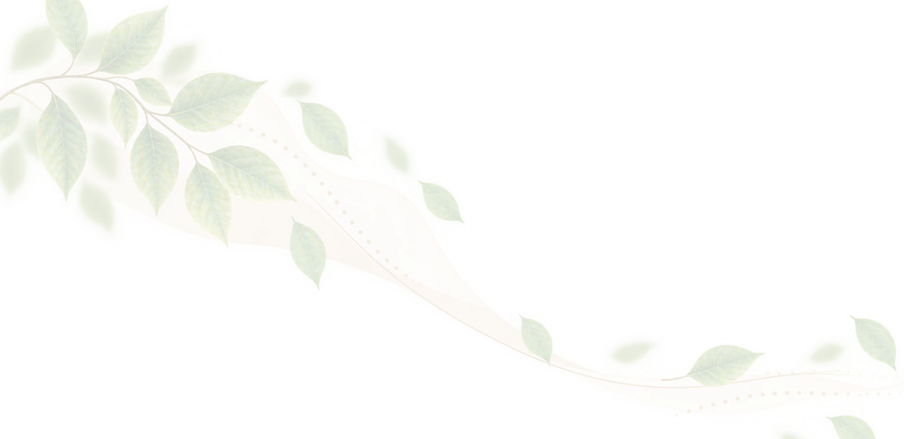
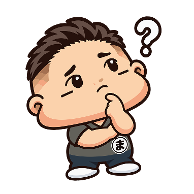
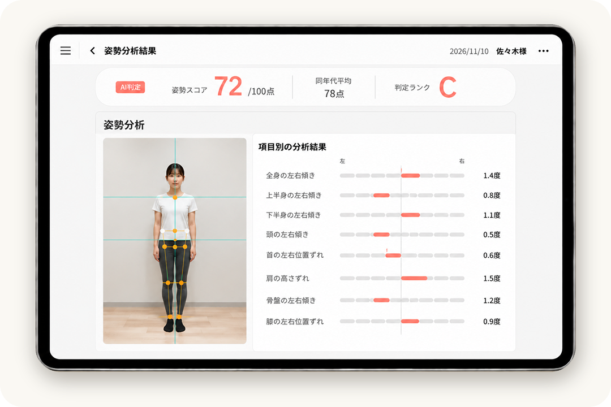
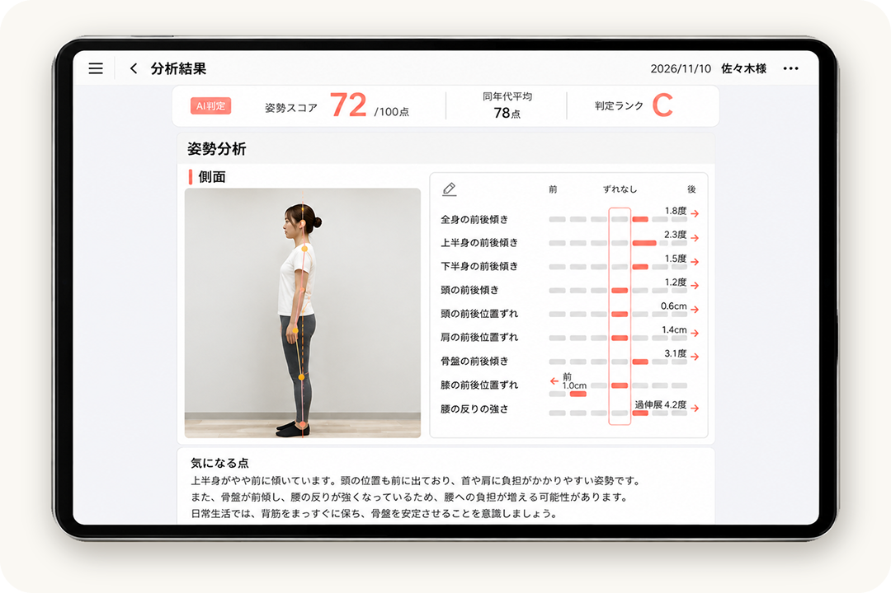
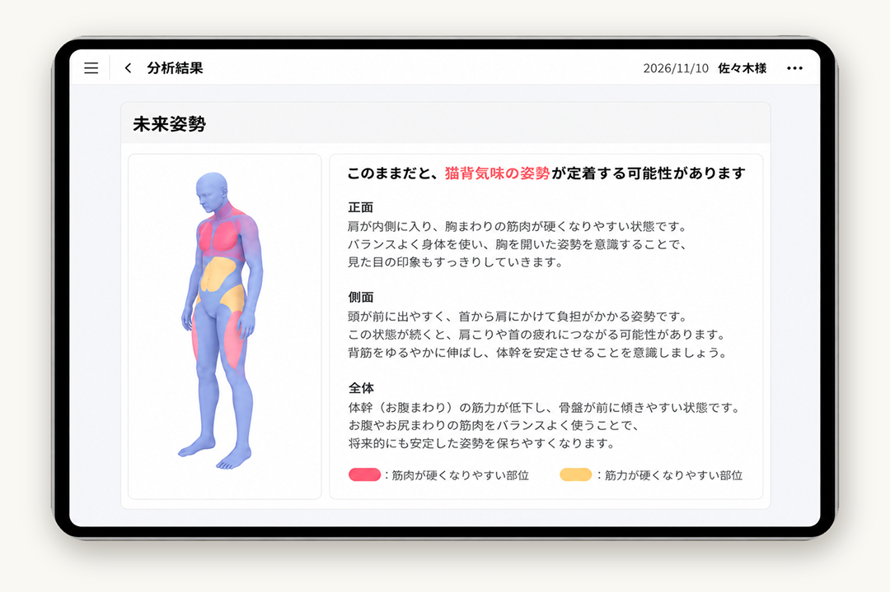
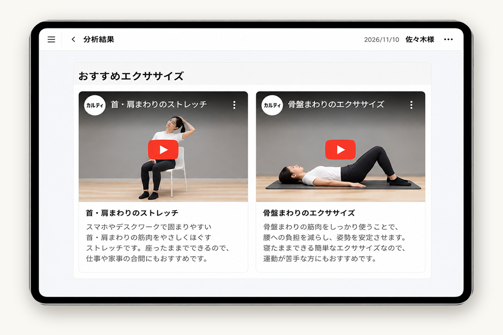
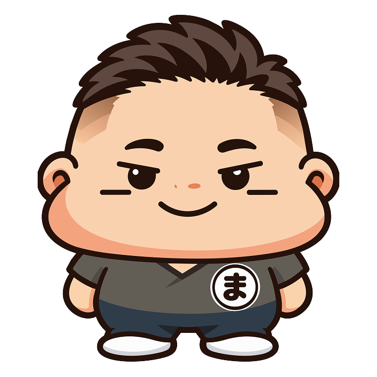

自分の姿勢が
どうなっているのか
知りたい

こんなこと、
気になっていませんか？
猫背や身体の傾きが
気になる
写真で自分の姿勢を
確認してみたい
今の身体の状態について
相談してみたい

体験会では
こんなことを行います
姿勢を撮影し、シセイカルテを使って
現在の姿勢を分析します。
結果を一緒に確認しながら、気になることを
カウンセリングします。


姿勢分析で、
今の身体の状態を見える化
現在の姿勢を客観的に確認し、身体のクセやバランスを知ることができます。


体験会当日の流れ
- STEP 1
姿勢撮影
姿勢を撮影し、現在の身体の状態を
確認します。 - STEP 2
姿勢分析
シセイカルテを使って、
姿勢の状態を分析します。 - STEP 3
結果説明
分析結果を見ながら、現在の姿勢について
分かりやすくご説明します。 - STEP 4
カウンセリング
気になることや、お悩みについて
お話をお伺いします。 - STEP 5
メニュー案内
カウンセリング内容をもとに、
メニューをご案内します。 - STEP 6
次回のご案内
体験会にご参加いただいた方へ、次回ご利用いただける特典をお案内します。
院長紹介

まじんくん
佐々木 和浩
柔道整復師佐々木整骨院では、お一人おひとりのお話を伺い、身体の状態を丁寧に確認することを大切にしています。
気になることや不安なことがありましたら、お気軽にご相談ください。
よくあるご質問
A.姿勢分析は何歳からでも出来ます。
施術は小学生ぐらいからになります。
A.動きやすい服装でお越しください。お着替えもご用意しています。
A.体験会は予約制です。電話またはLINEからご予約ください。
A.約20分を予定しています。
アクセス・駐車場のご案内
古川福沼にある整骨院です。
古川駅から車で約6分。吉野作造記念館方面へ進み、交差点を越えてすぐ。
店舗前に専用駐車場を2台ご用意しています。
Googleマップ埋め込み予定
まずはお気軽にご相談ください
体験会のご予約・
お問い合わせ
ご予約はLINEまたはお電話から
受け付けています。